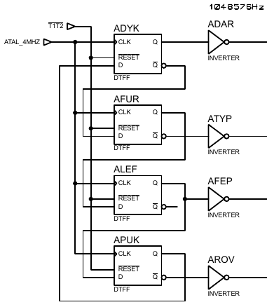
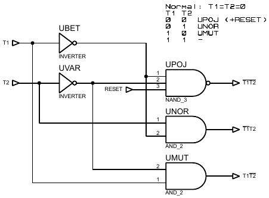
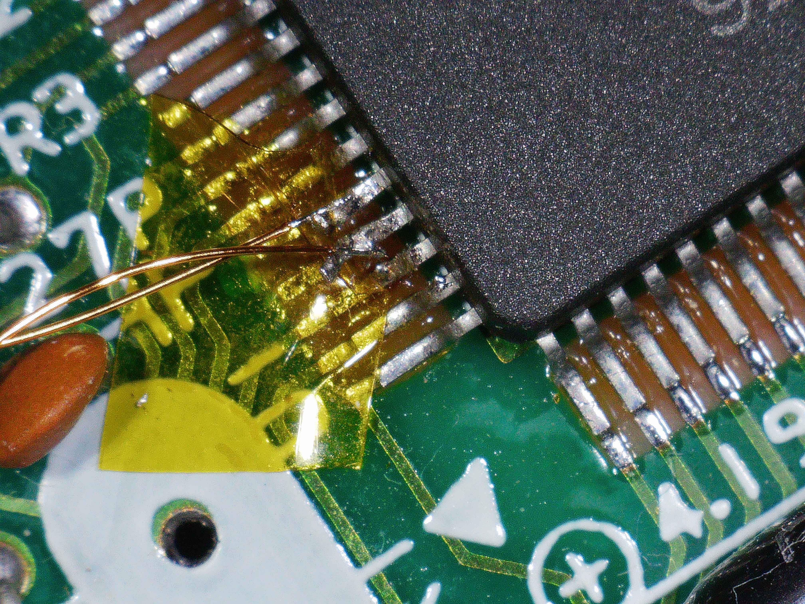
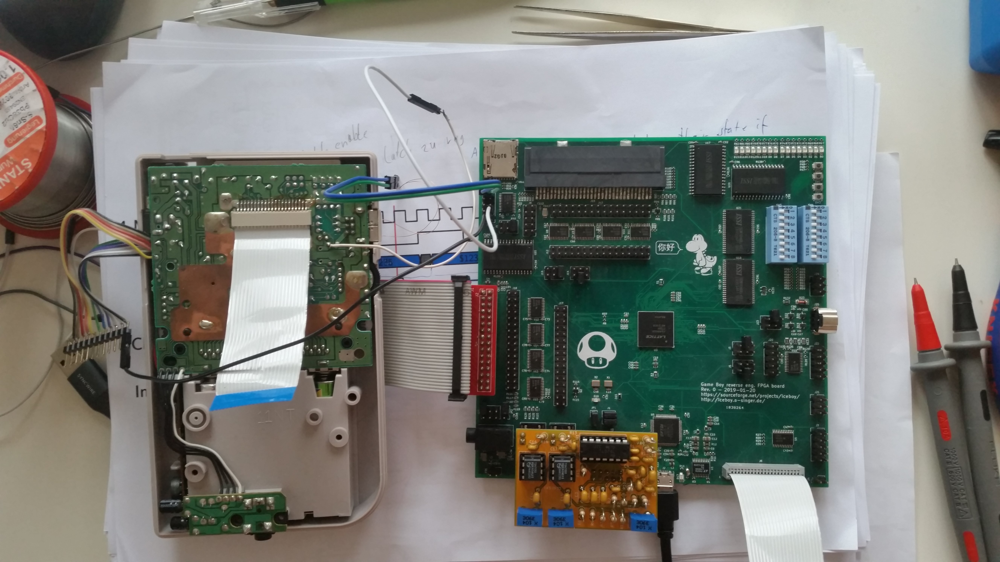

This work is licensed under a Creative Commons Attribution-ShareAlike 4.0 International License.
About two years ago I was experimenting with skipping the write to FF50 to get access to the boot ROM. I removed the crystal and clocked the DMG-CPU B with an FPGA and counted the exact amount of clock ticks that were necessary for the CPU to fetch the instruction at address 0x100. I noticed an odd inconsistency in behaviour after resetting the Gameboy: It wasn't always the same amount of ticks. At first I thought it is just random, but after a while I noticed a pattern: When I stopped the clock, reset the Gameboy by pulling the !RST pin to ground, and then starting the clock again, there were four possible clock tick counts I could measure. And it felt like all of them having the same probability. On the other hand, when I powered everything off, including the FPGA board, then powering everything back on, there was one specific count that was way more likely than the other three. (I had to switch off the FPGA, because it could otherwise power the DMG-CPU through the IO pins that are connected to it.)
For me it felt like there was some kind of two bit counter that doesn't get properly reset. I figured out a way to prove that something like this is going on: I wrote a small piece of Verilog code that allowed me to start and stop the clock and reset the Gameboy by pressing buttons. But the FPGA would count how many clock ticks were issued already and delay the stopping of the clock each time I press the stop button to ensure that the Gameboy receives a total number of ticks that is always dividable by four. It still counted how many ticks were necessary to reach address 0x100.
Now I repeated the following procedure:
Having the number of ticks dividable by four on each iteration, caused the number of ticks until it reached address 0x100 to be always the same amount. Like if this "imaginary" two bit counter is always stopping in the same state, because it always gets the right amount of ticks to do so.
Now I predicted when I add one extra tick each time, it should require one tick less each time to reach 0x100 until it wraps around after four iterations. It turned out that this is exactly how it behaves. Lets explain this by an example:
These are the four possible tick counts it takes for reaching address 0x100:
For simplicity, lets just call them by their least significant hex digits they end in: A, B, C and D
When, for example, we measured tick count B and have fed the Gameboy with exactly 0x2000000 ticks (which is dividable by four) until we stop the clock and reset the Gameboy, we will measure tick count B again next time we start the clock. But if we instead fed it 0x2000001 ticks, we will measure tick count A next time. If we do 0x2000001 ticks again, it will wrap around to tick count D, then C, then B, ..., and so on.
You can even feed in extra ticks while the reset line is pulled to ground, and it still impacts the tick count you measure in the next try. There is something in the Gameboy chip that isn't affected by the reset at all. It still gets clocked under reset and is able to count somehow. (Spoiler: Of course, I know what it is now. This is all about building up tension.)
Soon after my "discovery", Furrtek released his schematics of the DMG-CPU B. I was eager to find out what it was that kept counting during reset. I was suspecting bit 0 and 1 of the DIV register, but all bits in this register are reset by the same reset source. So it couldn't be it. My second suspect was the clock divider made out of the cells ADYK, AFUR, ALEF and APUK on the left hand side of page 1:

These four DFFs are reset by the signal T1T2 coming from here:

According to this, the four DFFs are reset when T1=T2=0 and RESET=1. The pins T1 and T2 are always connected to GND. So it looks like these four DFFs (ADYK, AFUR, ALEF and APUK) are also reset and can't be responsible for what we've seen in the experiment. (At least, that's what I thought.)
Now, two years later, I was investigating something else while I was documenting all the cells in the DMG-CPU B: I was looking at the I/O pads. Specifically the ones for !RST, T1 and T2. These three pads all look the same, so I was assuming they have the same function. The signal labeled RESET in the schematics is directly comming from the !RST pad. This means, the input buffer at this pad is inverting. This comes to no surprise, since this is all CMOS logic. But then on the other hand T1 and T2 are used as if their input buffers are not inverting. This is strange, because for them to be not inverting, they would need to have two additional transistors for inverting the signal a second time. But as I said, they really look the same as the !RST input buffer. Those two transistors should be visible. So I was comparing the schematics with the die shot to make sure there really aren't any inverters that are missing in the schematics and that the schematics overall are correct for that part. It took me a while until I accepted the possibility that Sharp could have made a mistake here, then it clicked: The reset of the four DFFs ADYK, AFUR, ALEF and APUK isn't actually working and the input buffers of T1 and T2 are inverting just like !RST. The non working reset of those DFFs could cause the behaviour I experimented on two years ago. So I had quickly modified my test code to check if this is actually what is happening: I added that I can control two extra output pins with a button press. They are normally low, and when I press the button, they go high until I release it again. I did this for controlling the T1 and T2 test pins of course. This is easier said than done, because I had to lift up the two pins from the PCB first:

It looks very ugly and indeed it is very ugly. I managed to damage one of the pads, it partially came off the PCB. So it won't survive another operation like that. Poor Gameboy endured a lot. This is how the whole setup looks now:

When I repeat the experiment from before, each time I pull the test pins T1 and T2 high during Gameboy reset, the tick count until address 0x100 gets read is always tick count D, no matter what it was before and no matter how many clock ticks the Gameboy got in the previous iteration. In my opinion, this actually proves that ADYK, AFUR, ALEF and APUK are only properly reset when T1 and T2 are high. There is a fifth DFF that is also reset by the T1T2 signal, namely AFER, which is responsible for generating a reset signal that is synchronized to the BOGA1MHZ clock.
This work is licensed under a Creative Commons Attribution-ShareAlike 4.0 International License.